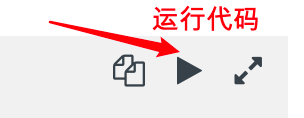

Leetcode 第9题 - 回文数(easy)
题目:判断一个整数是否是回文数。回文数是指正序（从左向右）和倒序（从右向左）读都是一样的整数。
示例 1:
输入: 121
输出: true
示例 2:
输入: -121
输出: false
解释: 从左向右读, 为 -121 。 从右向左读, 为 121- 。因此它不是一个回文数。
示例 3:
输入: 10
输出: false
解释: 从右向左读, 为 01 。因此它不是一个回文数。
编码实现思路
Leetocde模板代码:
#![allow(unused_variables)] fn main() { impl Solution { pub fn is_palindrome(x: i32) -> bool { } } }
实现思路
这里我们先要熟悉,一个基本操作 一个数数 取个位只需要取余( % 10)
101 % 10 = 1
如果要把每一位 取出来 就需要 循环 /10 %10
pub fn takenum(x: i32) { let mut tmp = x; while tmp >1 { print!("{} ",tmp%10); tmp = tmp /10; } println!(); } fn main() { takenum(543); }
leetcode给定的是 一个 i32数字,我们的思路是这样的 把 一个数字 比如 123 -> 反转 成 321 如果判断反转后的数字,和原数字相等 那么 就是回文数字。
example : 121 ->
tmp1 = 取个位1 * 10 = 10
tmp1 += 取十位2 * 10 = (tmp1 + 2) * 10 = (10 +2) * 10 =120
tmp1 += 取百位1 * 10 =(tmp1 + 1) * 10 = (120 +2) * 10 =1210
最后 tmp1 /10 = 121
反转一个整数
example : 123 -> 321 121->121
pub fn reverse(x: i32) -> i32{ let mut tmp = x; let mut tmp1 = 0; while (tmp >= 1) { // 123 第一次 temp1 30 tmp 12 -> 第二次 320 1 -> 第三次 3210 0.1 小于1 跳出循环 这样就完成了颠倒数字 tmp1 = (tmp1 + tmp % 10 )* 10; tmp = tmp / 10; } tmp1 /10 } fn main() { println!("{}",reverse(123)); }
回文数字完整代码
有了上面的反转,只需要判断下 反转后的代码是否与原文一致即可,但是下面代码 还对 某些特殊的数字 比如负数、能被10整除的数、0~10的数字 直接做出判断、做了一些特殊条件的处理。
pub fn is_palindrome(x: i32) -> bool { // [0,10)之间的数 都为 true if(x < 10 && x >=0){return true;} //如果 -开头的 和 100、1000 这样的直接排除 if(x < 0 || x % 10 ==0 ){ return false } let mut tmp = x; let mut tmp1 = 0; while (tmp >= 1) { //将数字颠倒 123 先取出 3* 10 在把tmp更新成 12 //这里加 if 是因为 如果是10位数 最后一次个位数再乘以10 -> 11位数 就超出 i32 的最大值了 就会报错! if tmp < 10 { tmp1 = (tmp1 + tmp % 10 )} else{ // 123 第一次 temp1 30 tmp 12 -> 第二次 320 1 -> 第三次 3210 0.1 小于1 跳出循环 这样就完成了颠倒数字 tmp1 = (tmp1 + tmp % 10 )* 10; } tmp = tmp / 10; } //123 -> 321 不相等 121 -> 121 相等 if tmp1 == x { return true; } return false; } //测试代码 fn main() { println!("{}",is_palindrome(123)); println!("{}",is_palindrome(121)); println!("{}",is_palindrome(1000000001)); }
提交结果：

ps:点击编辑器右上角 图标可运行代码哦!
